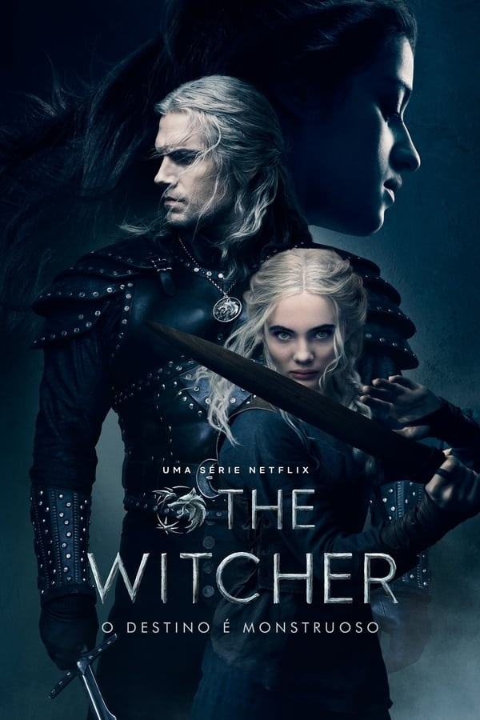

The Witcher (série de televisão)
The Witcher (em polonês, Wiedźmin) é uma série de televisão via streaming estadunidense-polonesa de drama e fantasia, criada por Lauren Schmidt Hissrich, baseada na série de livros do escritor polonês Andrzej Sapkowski. Situado em uma terra fictícia de inspiração medieval conhecida como "o continente", The Witcher explora a lenda de Geralt de Rivia e da Princesa Cirila, que estão ligados um ao outro pelo destino. A série é estrelada por Henry Cavill, Freya Allan e Anya Chalotra.
A primeira temporada consistiu em oito episódios e foi lançada na Netflix em 20 de dezembro de 2019. Foi baseada em The Last Wish e Sword of Destiny, que são coleções de contos que precedem a saga principal de Wiedźmin. A segunda temporada, composta por oito episódios, foi lançada em 17 de dezembro de 2021. Em setembro de 2021, a Netflix renovou a série para uma terceira temporada. Um filme de animação, The Witcher: Nightmare of the Wolf, foi lançado em 23 de agosto de 2021, enquanto uma minissérie prequela, The Witcher: Blood Origin, foi lançada em 2022.
Premissa
Geralt de Rivia (Cavill) é um bruxo, um mutante com poderes especiais que mata monstros por dinheiro. A Terra está num estado de caos enquanto o império de Nilfgaard procura expandir o seu território. Entre os refugiados desta luta está Cirilla (Freya Allan), também chamada Ciri, a Princesa de Cintra, que está sendo perseguida por Nilfgaard. Ela e o Geralt estão destinados um ao outro. Em suas aventuras Geralt também conhece Yennefer de Vengerberg (Anya Chalotra), uma feiticiera.
Elenco
- Henry Cavill como Geralt de Rivia, um caçador de monstros magicamente melhorado conhecido como um "bruxo". A princesa Ciri de Cintra é seu "destino".
- Freya Allan como Ciri, a princesa de Cintra, neta da rainha Calanthe e filha de Pavetta, da qual herdou o Sangue de Ancião. Ela está ligada ao Geralt pelo destino.
- Eamon Farren como Cahir Mawr Dyffryn aep Ceallach, apelidado de "Cavaleiro Negro", um comandante do exército Nilfgaardiano que lidera a invasão de Cintra e a caça a Cirilla.
- Anya Chalotra como Yennefer de Vengerberg, uma feiticeira metade elfa que tem um quarto da idade que aparenta ter.
- Joey Batey como Jaskier, uma viajante que faz amizade com Geralt e o acompanha em seu caminho.
- MyAnna Buring como Tissaia de Vries, mentora para Yennefer e a reitora de Aretuza, uma academia de treinamento para mulheres magas.
- Mimî M. Khayisa como Fringilla Vigo, uma feiticeira que treinou ao lado de Yennefer. Ela eventualmente lidera a invasão nilfgaardiana ao lado de Cahir.
Capa promocional da série
Video
Referências
«The Witcher Saga on Netflix». Platige. Consultado em 13 de janeiro de 2018. Arquivado do original em 25 de janeiro de 2018.
«The Witcher Saga on Wikipedia». Wikipedia. Consultado em 13 de janeiro de 2018. Arquivado do original em 25 de janeiro de 2018.
| The Witcher | |
|---|---|
| Logo da serie | |
| Formato | série |
| Gênero | Fantasia, Drama, Ação |
| Duração | 47–67 minutos |
| Criador(es) | Lauren Schmidt Hissrich |
| Baseado em | Wiedźmin, de Andrzej Sapkowski |
| País de origem | Estados Unidos, Polônia |
| Idioma original | Inglês |
| Diretor(es) | Tomasz Bagiński[1], Alik Sakharov[2] |
| Produtor(es) executivo(s) | Sean Daniel[7], Jason Brown[7], Tomasz Bagiński[7], Jarosław Sawko[7], Lauren Schmidt Hissrich |
| Editor(es) | Liana Del Giudice, Nick Arthurs, Jean-Daniel Fernandez-Qundez, Xavier Russell |
| Cinematografia | Jean-Philippe Gossart, Gavin Struthers |
| Roteirista(s) | Lauren Schmidt Hissrich, Jenny Klein[3], Beau DeMayo[4], Sneha Koorse[5], Declan de Barra[5], Haily Hall[6] |
| Elenco | Henry Cavill, Freya Allan, Eamon Farren, Anya Chalotra, Joey Batey, MyAnna Buring, Royce Pierreson, Mimî M. Khayisa, Wilson Mbomio, Anna Shaffer, Mahesh Jadu, Tom Canton, Mecia Simson, Kim Bodnia |
| Composto por Temporda 1 | Sonya Belousova, Giona Ostinelli |
| Temporada 2 | Joseph Trapanese[8] |
| Empresa(s) produtora(s) | Sean Daniel Company[7], Platige Image[7] |
| Emissora original | Netflix |
| Formato de exibição | 4K (Ultra HD) |
| Transmissão original | 20 de dezembro de 2019 – presente |
| Temporadas | 3 |
| Episódios | 24 |
| Cronologia | The Witcher: Nightmare of the Wolf, The Witcher: Blood Origin |